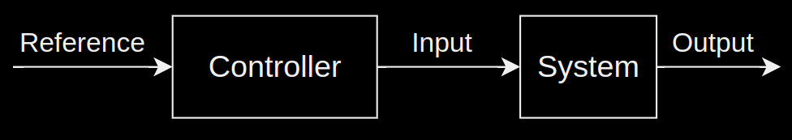

To control and regulate physical processes through the use of feedback loops
With the goal of maintaining a desired performance
While compensating for errors:
Disturbances
Changes or uncertainties in system dynamics and environment
In a perfect world, a model of a system's dynamics would help design a system's inputs [motor turn rates for example] that result in a desired behaviour and the controls problem would be solved.
Parts of a controller
Block diagrams are used to visualise important information about a controller and the system it controls. Arrows represent signals and boxes represent functions or equations.
Functions/Equations
Plant/System
Physically, it represents the system being controlled. Synthetically, it encapsulates the model equations.
Actuators - provide input to the plant
Sensors - measure the state of the plant
Controller - processes sensor data and generates control signal to the actuators
Examples of Signals
Input - commanded thrust
Output - an actual target location
Output describes what can be measured about a system. If velocity could be measured, it would also be included in the output.
Reference - a target set location
Signal path
Feedback path - sends sensor data back to the controller
Types of controllers
Open loop
There is no feedback from the system. They are susceptible to disturbances and errors. Errors will be unnoticed and are able to grow unchecked.

Closed loop
They rely on feedback to compare the output with the desired performance and adjust the input accordingly. They can adapt to errors.